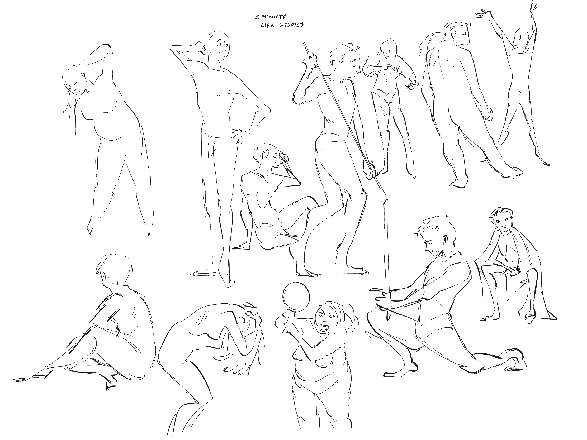
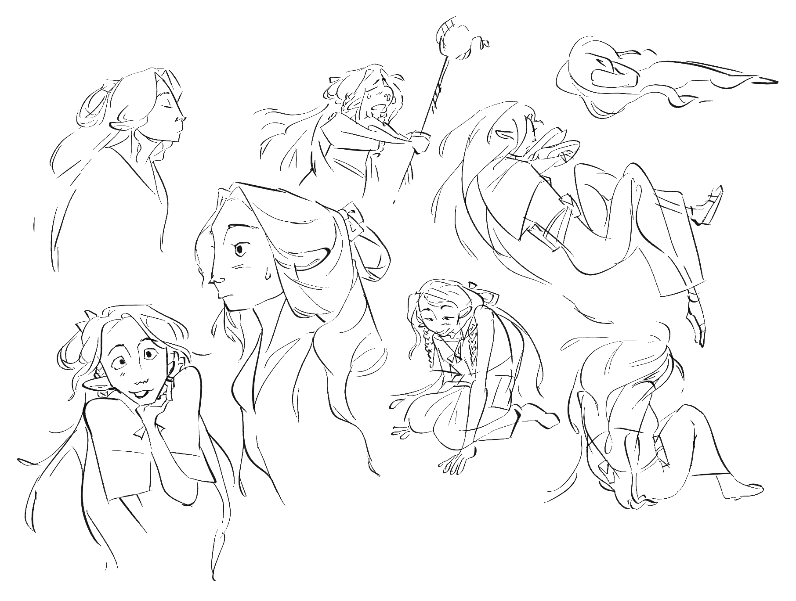
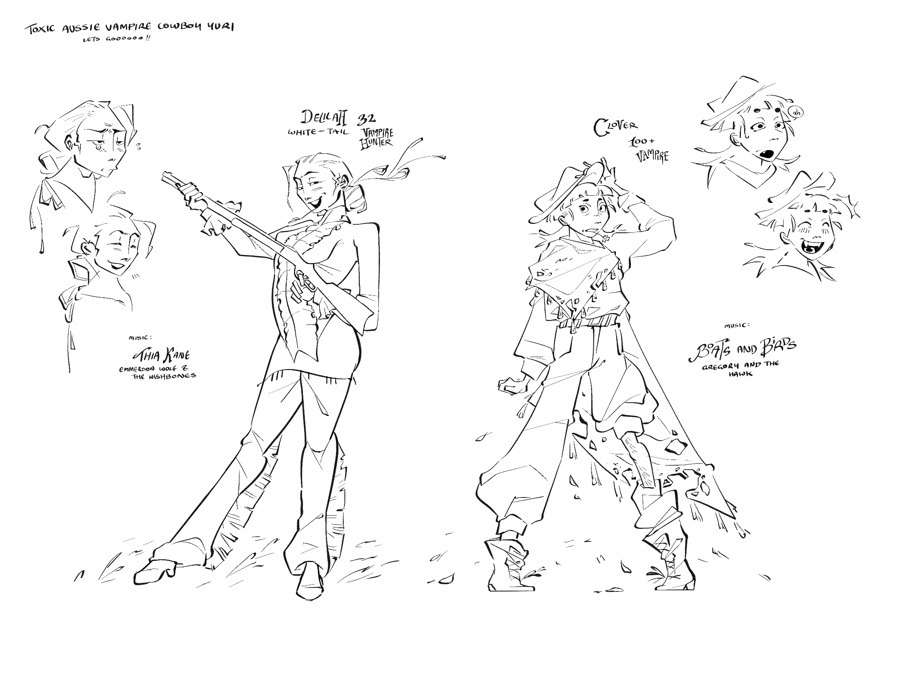
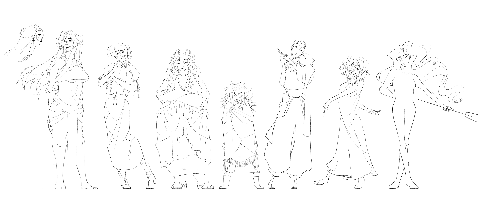

Three characters I designed that I thought would look nice here, haha! To the left is Lipa, the main star of my imagined short film. She chases down a spiritual grannie and the grannie's pet emu to rid herself of 'the ache', a physical manifestation of her own illness that no one else can see. The middle is Garlos, my halfling cleric dnd character! I never quite got the chance to colour him in, but I think he looks nice on his own. To the right is Vis, a character I never really got to do much else with.
Miscellaneous sketches


For my life studies, I use the site sketch daily for reference when I want to do something quick and fast without worrying over it for hours. I could not recommend life sketches more to artists, new and experienced. It teaches you not only how to draw figures in as short as two minutes or less, but also how to identify the key points of the pose. The more you do it, the more you'll start from the legs, the arms, the torso, instead of just starting at the head. To identify what truly makes up the piece in as little strokes as possible is a vital skill.

Some older characters I made, Delilah and Clover, inspired by the songs Thia Kane by Emmerson Wolf and The Wishbones, and Boats and Birds by Gregory and the Hawk. I find alot of my inspiration through music, and these two took residence in my head and would not let go so I had to bring them to life! I've yet to do anything more with them than this but I'd like to develop them further!
The HIGH SEVEN

From left to right, Argi, Pyosce, Konomi, Lobates, Naja, Egret, and Atlan. A work in progress lineup (in preparation for the annual art-fight) of my lovely main seven! While originally based on the seven deadly sins (can you guess who's who?) I've recently decided the titles are too restricting, and am rebranding them slightly. Instead, they are The Cult of Arche Katharízo-sēpō. This is not a cult of love nor devotion, worship nor faith, adoration nor praise. This is an acknowledgment of inevitability and the embracement of human selfishness. When The Divine Purge begins in the Cavity of Atropos’s womb, the world will be cleansed of its sin. The Arche, Katharízo will descend from her heavenly quarters and purify the planet through rot and plague. The cult is unaware of when this prophecy will fall, but they believe it with what little faith they have. There is no delaying nor pausing what will be. Thus, in exchange for the right to indulge in pleasentries, they have pledged that they will activate the inevitable apocalypse when the Arche so wishes, with the sacrifice of the Embodied, Rebirthed Star.